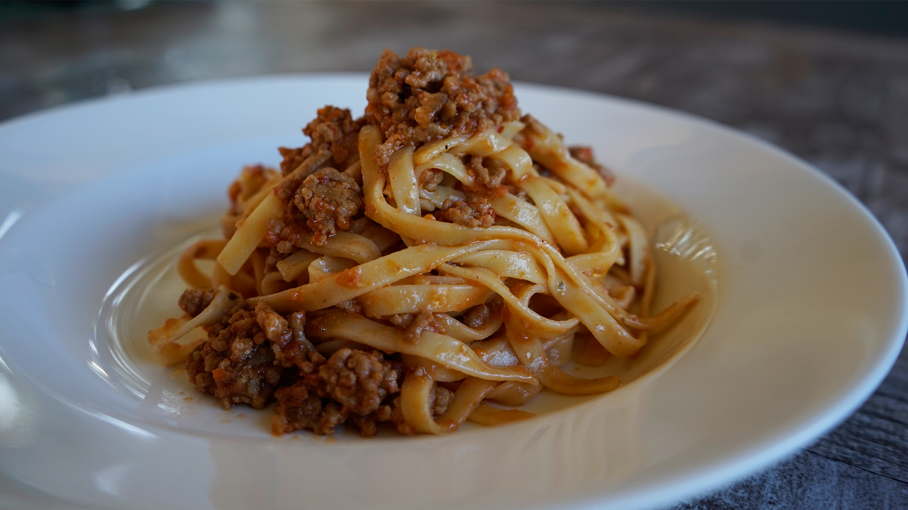
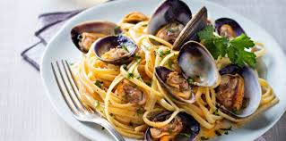
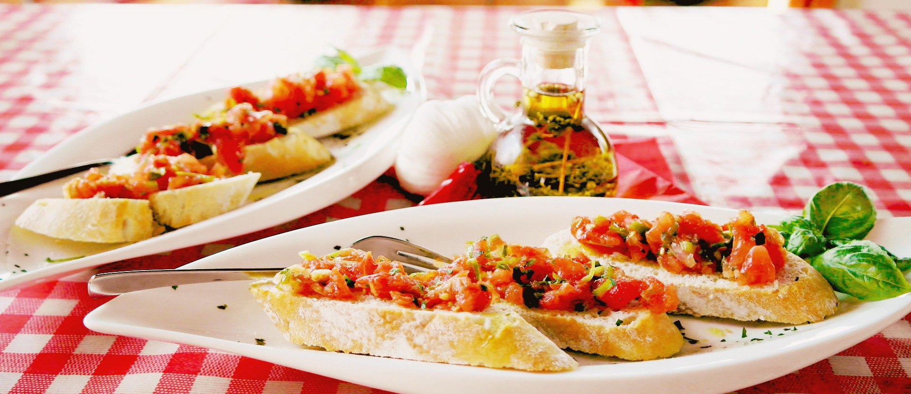
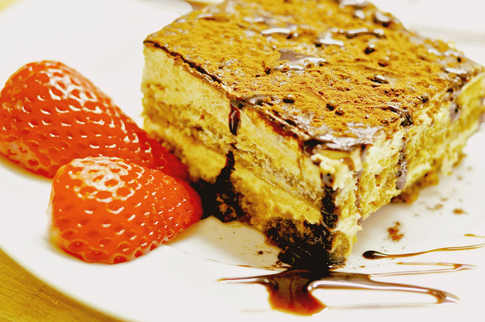
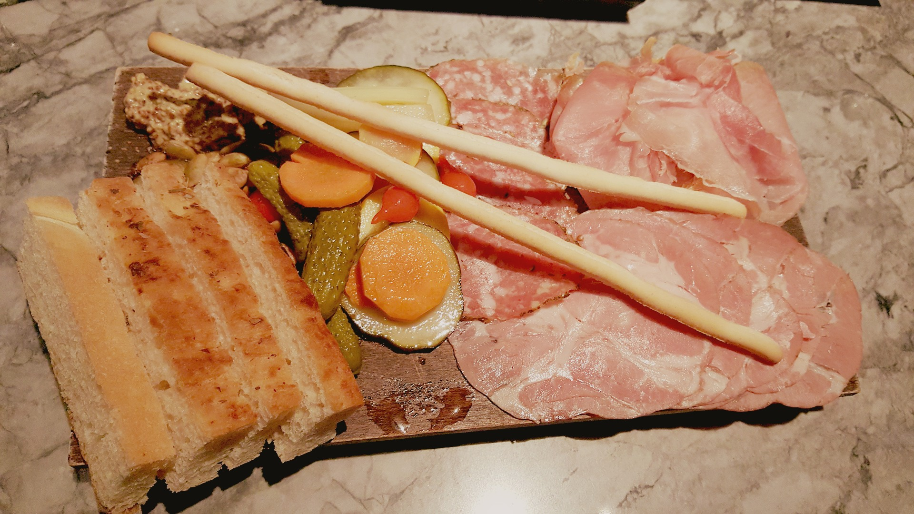
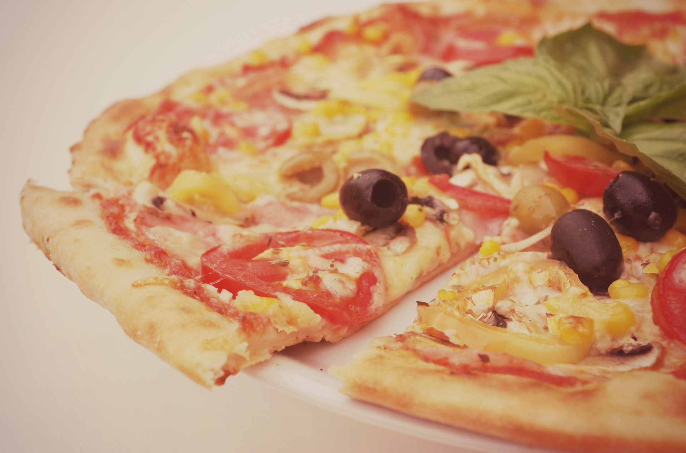
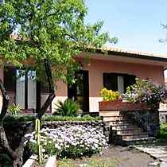
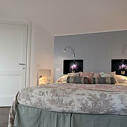
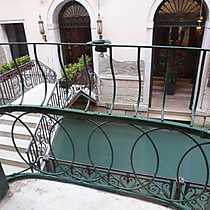
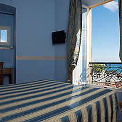

Ils sont nos voisins, ils sont chaleureux, on y mange bien … Bref, on pourrait vous vanter les mérites d’un voyage en Italie pendant des heures !
Villes a visiter
La capitale, reconnue pour son architecture, ses musées, son Colisée, sa fontaine de Trévi, le Panthéon, la chapelle Sixtine, le Vatican: impossible de tout voir en une seule visite.
La romantique, beaucoup moins kitch que je ne l'aurais cru. Ses canaux, ses petits ponts, ses ruelles étroites et labyrinthiques, ses bateaux-taxis, sa basilique St-Marc.
Pour sa fameuse tour penchée oui, mais aussi pour la découverte d'une jolie petite ville méconnue.
Ville animée s'il en est une, Naples est un joyeux bazar d'odeurs, de saveurs et de scènes typiquement italiennes.
Ses ruines figées dans le temps, car détruites il y a 2 000 ans par l'éruption du volcan Vésuve. Une fascinante visite.
Là où on a l'impression d'entrer dans un tableau de la Renaissance dans cette ville-musée. Les dômes en tuiles rouges, la cathédrale, le David de Michel-Ange, la Vénus de Botticelli, les tours en pierres, les jardins.
Plâts a goûter
-

- Linguini al Ragû 
- Pasta alla vongole 
- Bruschetta 
- Tiramisu 
- Les antipasti 
- La pizza
Hotels recommandés
| Photo | Hôtel | Ville | Note | Avis |
|---|---|---|---|---|
|  | Sotto il Vulcano | Nicolosi | ★★★★★ | Gentillesse et accueil chaleureux des propriétaires, proximité d'un village avec toutes commodités, informations pertinentes pour la visite de l'Etna font de ce B&B le camp de base idéal ! |
|  | il Borgo di Genova | Gênes | ★★★★★ | Accueil super, chambre parfaite, rue et bâtiment très calme. Nous avons eu les conseils de Giovanni pour visiter Gênes et ses environs. |
|  | Antica Riva | Venise | ★★★★★ | Nous avons logé dans ce B&B lors d'un long week-end. Nous sommes tout simplement ravis de cet endroit. L'appartement est très propre (nettoyé tous les jours) et clair. |
|  | Belle Epoque | San Remo | ★★★ | Hôtel qui a été entièrement restructuré. Les propriétaires sont italo-français et sont super. Ils ont aménagé l'hôtel avec beaucoup de goût. ils font un super petit déjeuner. |
Contact